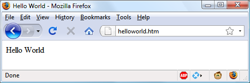
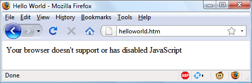
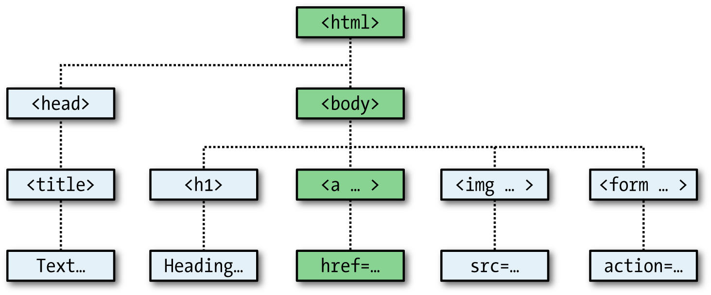

Exploring JavaScript
JavaScript brings a dynamic functionality to your websites. Every time you see some‐
thing pop up when you mouse over an item in the browser, or see new text, colors, or
images appear on the page in front of your eyes, or grab an object on the page and
drag it to a new location—all those things are done through JavaScript. It offers
effects that are not otherwise possible, because it runs inside the browser and has
direct access to all the elements in a web document.
JavaScript first appeared in the Netscape Navigator browser in 1995, coinciding with
the addition of support for Java technology in the browser. Because of the initial
incorrect impression that JavaScript was a spin-off of Java, there has been some long-
term confusion over their relationship. However, the naming was just a marketing
ploy to help the new scripting language benefit from the popularity of the Java pro‐
gramming language.
JavaScript gained new power when the HTML elements of the web page got a more
formal, structured definition in what is called the
Document Object Model
, or
DOM
.
The DOM makes it relatively easy to add a new paragraph or focus on a piece of text
and change it.
Because both JavaScript and PHP support much of the structured programming syn‐
tax used by the C programming language, they look very similar to each other. They
are both fairly high-level languages, too; for instance, they are weakly typed, so it’s
easy to change a variable to a new type just by using it in a new context.
Now that you have learned PHP, you should find JavaScript even easier. And you’ll be
glad you did, because it’s at the heart of the Web 2.0 Ajax technology that provides the
fluid web frontends that (along with HTML5 features) savvy web users expect these
days.
JavaScript and HTML Text
JavaScript is a client-side scripting language that runs entirely inside the web browser.
To call it up, you place it between opening
<script>
and closing
</script>
HTML
tags. A typical HTML 4.01 “Hello World” document using JavaScript might look like
Example 13-1
.
Example 13-1. “Hello World” displayed using JavaScript
<html>
<head><title>Hello World</title></head>
<body>
<script type="text/javascript">
document.write("Hello World")
</script>
<noscript>
Your browser doesn't support or has disabled JavaScript
</noscript>
</body>
</html>
You may have seen web pages that use the HTML tag
<script
language="javascript">
, but that usage has now been deprecated.
This
example
uses
the
more
recent
and
preferred
<script
type="text/javascript">
, or you can just use
<script>
on its
own if you like.
Within the
<script>
tags is a single line of JavaScript code that uses its equivalent of
the PHP
echo
or
print
commands,
document.write
. As you’d expect, it simply out‐
puts the supplied string to the current document, where it is displayed.
You may also have noticed that, unlike with PHP, there is no trailing semicolon (
;
).
This is because a newline serves the same purpose as a semicolon in JavaScript. How‐
ever, if you wish to have more than one statement on a single line, you do need to
place a semicolon after each command except the last one. Of course, if you wish, you
can add a semicolon to the end of every statement, and your JavaScript will work fine.
The other thing to note in this example is the
<noscript>
and
</noscript>
pair of
tags. These are used when you wish to offer alternative HTML to users whose
browser does not support JavaScript or who have it disabled. Using these tags is up to
you, as they are not required, but you really ought to use them because it’s usually not
that difficult to provide static HTML alternatives to the operations you provide using
JavaScript. However, the remaining examples in this book will omit
<noscript>
tags,
because we’re focusing on what you can do with JavaScript, not what you can do
without it.
When
Example 13-1
is loaded, a web browser with JavaScript enabled will output the
following (see
Figure 13-1
):
Hello World

Figure 13-1. JavaScript, enabled and working
A browser with JavaScript disabled will display this message (see
Figure 13-2
):
Your browser doesn't support or has disabled JavaScript.

Figure 13-2. JavaScript has been disabled
Using Scripts Within a Document Head
In addition to placing a script within the body of a document, you can put it in the
<head>
section, which is the ideal place if you wish to execute a script when a page
loads. If you place critical code and functions there, you can also ensure that they are
ready to use immediately by any other script sections in the document that rely on
them.
Another reason for placing a script in the document head is to enable JavaScript to
write things such as meta tags into the
<head>
section, because the location of your
script is the part of the document it writes to by default.
Older and Nonstandard Browsers
If you need to support browsers that do not offer scripting, you will need to use the
HTML comment tags (
<!--
and
-->
) to prevent them from encountering script code
that they should not see.
Example 13-2
shows how you add them to your script code.
Example 13-2. The “Hello World” example modified for non-JavaScript browsers
<html>
<head><title>Hello World</title></head>
<body>
<script type="text/javascript">
document.write("Hello World")
</script>
<noscript>
Your browser doesn't support or has disabled JavaScript
</noscript>
</body>
</html>
Here an opening HTML comment tag (
<!--
) has been added directly after the open‐
ing
<script>
statement and a closing comment tag (
// -->
) directly before the script
is closed with
</script>
.
The double forward slash (
//
) is used by JavaScript to indicate that the rest of the line
is a comment. It is there so that browsers that
do
support JavaScript will ignore the
following
-->
, but non-JavaScript browsers will ignore the preceding
//
, and act on
the
-->
by closing the HTML comment.
Although the solution is a little convoluted, all you really need to remember is to use
the two following lines to enclose your JavaScript when you wish to support very old
or nonstandard browsers:
<script type="text/javascript"><!—
(Your JavaScript goes here...)
// --></script>
However, the use of these comments is unnecessary for any browser released over the
past several years.
There are a couple of other scripting languages you should know
about. These include Microsoft’s VBScript, which is based on the
Visual Basic programming language, and Tcl, a rapid prototyping
language. They are called up in a similar way to JavaScript, except
they
use
types
of
text/vbscript
and
text/tcl
,
respectively.
VBScript works only in Internet Explorer; use of it in other brows‐
ers requires a plug-in. Tcl always needs a plug-in. So both should be
considered nonstandard, and neither is covered in this book.
Including JavaScript Files
In addition to writing JavaScript code directly in HTML documents, you can include
files of JavaScript code either from your website or from anywhere on the Internet.
The syntax for this is as follows:
<script type="text/javascript" src="script.js"></script>
Or, to pull a file in from the Internet, use this:
<script type="text/javascript" src="http://someserver.com/script.js">
</script>
As for the script files themselves, they must
not
include any
<script>
or
</script>
tags, because they are unnecessary: the browser already knows that a JavaScript file is
being loaded. Putting them in the JavaScript files will cause an error.
Including script files is the preferred way for you to use third-party JavaScript files on
your website.
It is possible to leave out the
type="text/javascript"
parameters;
all modern browsers default to assuming that the script contains
JavaScript.
Debugging JavaScript Errors
When you’re learning JavaScript, it’s important to be able to track typing or other
coding errors. Unlike PHP, which displays error messages in the browser, JavaScript
handles
error
messages
in
a
way
that
changes
according
to
the
browser
used.
Table 13-1
lists how to access JavaScript error messages in each of the five most com‐
monly used browsers.
Table 13-1. Accessing JavaScript error messages in different browsers
| Browser |
How to access JavaScript error messages |
| Apple Safari |
Safari does not have an Error Console enabled by default, but you can turn it on by selecting
Safari
→
Preferences
→
Advanced
→
“Show Develop menu in menu bar.” However, you may prefer
to use the
Firebug Lite JavaScript module
, which many people find easier to use. |
| Google Chrome |
Click the menu icon that looks like a page with a corner turned; then select
Developer
→
JavaScript Console. You can also use the shortcut Ctrl-Shift-J on a PC, or Command-
Shift-J on a Mac. |
| Microsoft Internet Explorer |
Select Tools
→
Internet Options
→
Advanced; then uncheck the Disable Script Debugging box and
check the “Display a Notification about Every Script Error” box. |
| Mozilla Firefox |
Select Tools
→
Error Console or use the shortcut Ctrl-Shift-J on a PC, or Command-Shift-J on a Mac. |
| Opera |
Select Tools
→
Advanced
→
Error Console. |
OS X users: Although I have shown you how to create an Error
Console for JavaScript, you may prefer to use Google Chrome (for
Intel OS X 10.5 or higher).
To try out whichever Error Console you are using, let’s create a script with a minor
error.
Example 13-3
is much the same as
Example 13-1
, but the final double quota‐
tion mark has been left off the end of the string
"Hello World"
—
a common syntax
error.
Example 13-3. A JavaScript “Hello World” script with an error
<html>
<head><title>Hello World</title></head>
<body>
<script type="text/javascript">
document.write("Hello World)
</script>
</body>
</html>
Type the example and save it as
test.html
; then call it up in your browser. It should
succeed only in displaying the title, not anything in the main browser window. Now
call up the Error Console in your browser, and you should see a message such as the
one in
Example 13-4
. To the right there will be a link to the source, which, when
clicked, shows the error line highlighted (but does not indicate the position at which
the error was encountered).
Example 13-4. A Mozilla Firefox Error Console message
SyntaxError: unterminated string literal
In Microsoft Internet Explorer, the error message will look like
Example 13-5
, and
there’s no helpful arrow, but you are given the line and position.
Example 13-5. A
Microsoft Internet Explorer Error Console message
unterminated string constant
Google Chrome and Opera will give the message in
Example 13-6
. Again, you’ll be
given the line error number but not the exact location.
Example 13-6. A Google Chrome/Opera Error Console message
Uncaught SyntaxError: Unexpected token ILLEGAL
And Apple Safari provides the message in
Example 13-7
, with a link to the source on
the right stating the line number of the error. You can click the link to highlight the
line, but it will not show where on the line the error occurred.
Example 13-7. An Opera Error Console message
SyntaxError: Unexpected EOF
If you find this support a little underwhelming, the Firebug plug-in for Firefox (and
now Chrome too) at
http://getfirebug.com
is very popular among JavaScript develop‐
ers and is definitely worth a look.
If you will be typing the following code snippets to try them out,
don’t forget to surround them with
<script>
and
</script>
tags.
Using Comments
Because of their shared inheritance from the C programming language, PHP and
JavaScript have many similarities, one of which is commenting. First, there’s the
single-line comment, like this:
// This is a comment
This style uses a pair of forward slash characters (
//
) to inform JavaScript that every‐
thing following is to be ignored. You also have multiline comments, like this:
/* This is a section
of multiline comments
that will not be
interpreted */
Here you start a multiline comment with the sequence
/*
and end it with
*/
. Just
remember that you cannot nest multiline comments, so make sure that you don’t
comment out large sections of code that already contain multiline comments.
Semicolons
Unlike PHP, JavaScript generally does not require semicolons if you have only one
statement on a line. Therefore, the following is valid:
x += 10
However, when you wish to place more than one statement on a line, you must sepa‐
rate them with semicolons, like this:
x += 10; y -= 5; z = 0
You can normally leave the final semicolon off, because the newline terminates the
final statement.
There are exceptions to the semicolon rule. If you write JavaScript
bookmarklets, or end a statement with a variable or function refer‐
ence,
and
the first character of the line below is a left parenthesis or
bracket, you
must
remember to append a semicolon or the Java‐
Script will fail. So, when in doubt, use a semicolon.
Variables
No particular character identifies a variable in JavaScript as the dollar sign does in
PHP. Instead, variables use the following naming rules:
•
A variable may include only the letters
a-z
,
A-Z
,
0-9
, the
$
symbol, and the
underscore (
_
).
•
No other characters, such as spaces or punctuation, are allowed in a variable
name.
•
The first character of a variable name can be only
a-z
,
A-Z
,
$
, or
_
(no numbers).
•
Names are case-sensitive.
Count
,
count
, and
COUNT
are all different variables.
•
There is no set limit on variable name lengths.
And yes, you’re right that is a
$
there in that list. It
is
allowed by JavaScript and
may
be the first character of a variable or function name. Although I don’t recommend
keeping the
$
symbols, it means that you can port a lot of PHP code more quickly to
JavaScript that way.
String Variables
JavaScript string variables should be enclosed in either single or double quotation
marks, like this:
greeting = "Hello there"
warning = 'Be careful'
You may include a single quote within a double-quoted string or a double quote
within a single-quoted string. But you must escape a quote of the same type by using
the backslash character, like this:
greeting = "\"Hello there\" is a greeting"
warning = '\'Be careful\' is a warning'
To read from a string variable, you can assign it to another one, like this:
newstring = oldstring
or you can use it in a function, like this:
status = "All systems are working"
document.write(status)
Numeric Variables
Creating a numeric variable is as simple as assigning a value, like these examples:
count = 42
temperature = 98.4
Like strings, numeric variables can be read from and used in expressions and functions.
Arrays
JavaScript arrays are also very similar to those in PHP, in that an array can contain
string or numeric data, as well as other arrays. To assign values to an array, use the
following syntax (which in this case creates an array of strings):
toys = ['bat', 'ball', 'whistle', 'puzzle', 'doll']
To create a multidimensional array, nest smaller arrays within a larger one. So, to cre‐
ate a two-dimensional array containing the colors of a single face of a scrambled
Rubik’s Cube (where the colors red, green, orange, yellow, blue, and white are repre‐
sented by their capitalized initial letters), you could use the following code:
face = [
['R', 'G', 'Y'],
['W', 'R', 'O'],
['Y', 'W', 'G']
];
The previous example has been formatted to make it obvious what is going on, but it
could also be written like this:
face = [['R', 'G', 'Y'], ['W', 'R', 'O'], ['Y', 'W', 'G']]
or even like this:
top = ['R', 'G', 'Y']
mid = ['W', 'R', 'O']
bot = ['Y', 'W', 'G']
face = [top, mid, bot]
To access the element two down and three along in this matrix, you would use the
following (because array elements start at position 0):
document.write(face[1][2])
This statement will output the letter
O
for
orange
.
JavaScript arrays are powerful storage structures, so
Chapter 15
dis
cusses them in much greater depth.
Operators
Operators in JavaScript, as in PHP, can involve mathematics, changes to strings, and
comparison and logical operations (
and
,
or
, etc.). JavaScript mathematical operators
look a lot like plain arithmetic; for instance, the following statement outputs
15
:
document.write(13 + 2)
The following sections teach you about the various operators.
Arithmetic Operators
Arithmetic operators
are used to perform mathematics. You can use them for the
main four operations (addition, subtraction, multiplication, and division) as well as
to find the modulus (the remainder after a division) and to increment or decrement a
value (see
Table 13-2
).
Table 13-2. Arithmetic operators
| Operator |
Description |
Example |
| + |
Addition |
j+12 |
| - |
Subtraction |
j-22 |
| * |
Multiplication |
j*7 |
| / |
Division |
j/3.13 |
| % |
Modulus (division remainder) |
j%6 |
| ++ |
Increment |
++j |
| -- |
Decrement |
--j |
Assignment Operators
The
assignment
operators
are used to assign values to variables. They start with the
very simple
=
, and move on to
+=
,
-=
, and so on. The operator
+=
adds the value on
the right side to the variable on the left, instead of totally replacing the value on the
left. Thus, if
count
starts with the value
6
, the statement
count += 1
sets
count
to
7
, just like the more familiar assignment statement:
count = count + 1
Table 13-3
lists the various assignment operators available.
Table 13-3. Assignment operators
| Operator |
Example |
Equivalent to |
| = |
j = 99 |
j = 99 |
| += |
j += 2 |
j = j + 2 |
| += |
j += 'string' |
j = j + 'string' |
| -= |
j -= 12 |
j = j - 12 |
| *= |
j *= 2 |
j = j * 2 |
| /= |
j /= 6 |
j = j / 6 |
| %= |
j %= 7 |
j = j % 7 |
Comparison Operators
Comparison operators
are generally used inside a construct such as an
if
statement,
where you need to compare two items. For example, you may wish to know whether a
variable you have been incrementing has reached a specific value, or whether another
variable is less than a set value, and so on (see
Table 13-4
).
Table 13-4. Comparison operators
| Operator |
Description |
Example |
| == |
Is equal to |
j == 42 |
| != |
Is not equal to |
j != 17 |
| > |
Is greater than |
j > 0 |
| < |
Is less than |
j < 100 |
| >= |
Is greater than or equal to |
j >= 23 |
| <= |
Is less than or equal to |
j <= 3 |
| === |
Is equal to (and of the same type) |
j === 56 |
| !== |
Is not equal to (and of the same type) |
j !== '1' |
Logical Operators
Unlike PHP, JavaScript’s
logical
operators
do not include
and
and
or
equivalents to
&&
and
||
, and there is no
xor
operator (see
Table 13-5
).
Table 13-5. Logical operators
| Operator |
Description |
Example |
| && |
And |
j == 1 && k == 2 |
| || |
Or |
j < 100 || j > 0 |
| ! |
Not |
! (j == k) |
Variable Incrementing and Decrementing
The following forms of post- and pre-incrementing and decrementing you learned to
use in PHP are also supported by JavaScript:
++x
--y
x += 22
y -= 3
String Concatenation
JavaScript handles string concatenation slightly differently from PHP. Instead of
the
.
(period) operator, it uses the plus sign (
+
), like this:
document.write("You have " + messages + " messages.")
Assuming that the variable
messages
is set to the value
3
, the output from this line of
code will be as follows:
You have 3 messages.
Just as you can add a value to a numeric variable with the
+=
operator, you can also
append one string to another the same way:
name = "James"
name += " Dean"
Escaping Characters
Escape characters, which you’ve seen used to insert quotation marks in strings, can
also insert various special characters such as tabs, newlines, and carriage returns.
Here is an example using tabs to lay out a heading; it is included here merely to illus‐
trate escapes, because in web pages, there are better ways to do layout:
heading = "Name\tAge\tLocation"
Table 13-6
details the escape characters available.
Table 13-6. JavaScript’s escape characters
| Character |
Meaning |
| \b |
Backspace |
| \f |
Form feed |
| \n |
New line |
| \r |
Carriage return |
| \t |
Tab |
| \' |
Single quote (or apostrophe) |
| \" |
Double quote |
| \\ |
Backslash |
| \XXX |
An octal number between
000
and
377
that represents the Latin-1 character equivalent (such as
\251
for the
© symbol) |
\xXX |
A hexadecimal number between
00
and
FF
that represents the Latin-1 character equivalent (such as
\xA9
for
the © symbol) |
| \uXXXX |
A hexadecimal number between
0000
and
FFFF
that represents the Unicode character equivalent (such as
\u00A9
for the © symbol) |
Variable Typing
Like PHP, JavaScript is a very loosely typed language; the
type
of a variable is deter‐
mined only when a value is assigned and can change as the variable appears in differ‐
ent contexts. Usually, you don’t have to worry about the type; JavaScript figures out
what you want and just does it.
Take a look at
Example 13-8
, in which:
1.
The variable
n
is assigned the string value
838102050
, the next line prints out its
value, and the
typeof
operator is used to look up the type.
2.
n
is given the value returned when the numbers 12345 and 67890 are multiplied
together. This value is also
838102050
, but it is a number, not a string. The type of
variable is then looked up and displayed.
3.
Some text is appended to the number
n
and the result is displayed.
Example 13-8. Setting a variable’s type by assignment
<script>
n = '838102050' // Set 'n' to a string
document.write('n = ' + n + ', and is a ' + typeof n + '<br>')
n = 12345 * 67890; // Set 'n' to a number
document.write('n = ' + n + ', and is a ' + typeof n + '<br>')
n += ' plus some text' // Change 'n' from a number to a string
document.write('n = ' + n + ', and is a ' + typeof n + '<br>')
</script>
The output from this script looks like this:
n = 838102050, and is a string
n = 838102050, and is a number
n = 838102050 plus some text, and is a string
If there is ever any doubt about the type of a variable, or you need to ensure that a
variable has a particular type, you can force it to that type by using statements such as
the following (which respectively turn a string into a number and a number into a
string):
n = "123"
n *= 1 // Convert 'n' into a number
n = 123
n += "" // Convert 'n' into a string
Or, of course, you can always look up a variable’s type by using the
typeof
operator.
Functions
As with PHP, JavaScript functions are used to separate out sections of code that per‐
form a particular task. To create a function, declare it in the manner shown in
Example 13-9
.
Example 13-9. A simple function declaration
<script>
function product(a, b)
{
return a*b
}
</script>
This function takes the two parameters passed, multiplies them together, and returns
the product.
Global Variables
Global variables are ones defined outside of any functions (or within functions, but
defined without the
var
keyword). They can be defined in the following ways:
a = 123 // Global scope
var b = 456 // Global scope
if (a == 123) var c = 789 // Global scope
Regardless of whether you are using the
var
keyword, as long as a variable is defined
outside of a function, it is global in scope. This means that every part of a script can
have access to it.
Local Variables
Parameters passed to a function automatically have local scope; that is, they can be
referenced only from within that function. However, there is one exception. Arrays
are passed to a function by reference, so if you modify any elements in an array
parameter, the elements of the original array will be modified.
To define a local variable that has scope only within the current function, and has not
been passed as a parameter, use the
var
keyword.
Example 13-10
shows a function
that creates one variable with global scope and two with local scope.
Example 13-10. A function creating variables with global and local scope
<script>
function test()
{
a = 123 // Global scope
var b = 456 // Local scope
if (a == 123) var c = 789 // Local scope
}
</script>
To test whether scope setting has worked in PHP, we can use the
isset
function. But
in JavaScript there isn’t one, so
Example 13-11
makes use of the
typeof
operator,
which returns the string
undefined
when a variable is not defined.
Example 13-11. Checking the scope of the variables
defined in function test
<script>
test()
if (typeof a != 'undefined') document.write('a = "' + a + '"<br>')
if (typeof b != 'undefined') document.write('b = "' + b + '"<br>')
if (typeof c != 'undefined') document.write('c = "' + c + '"<br>')
function test()
{
a = 123
var b = 456
if (a == 123) var c = 789
}
</script>
The output from this script is the following single line:
a = "123"
This shows that only the variable
a
was given global scope, which is exactly what we
would expect, since the variables
b
and
c
were given local scope by being prefaced
with the
var
keyword.
If your browser issues a warning about
b
being undefined, the warning is correct but
can be ignored.
The Document Object Model
The designers of JavaScript were very smart. Rather than just creating yet another
scripting language (which would have still been a pretty good improvement at the
time), they had the vision to build it around the
Document Object Model
, or
DOM
.
This breaks down the parts of an HTML document into discrete
objects
, each with its
own
properties
and
methods
and each subject to JavaScript’s control.
JavaScript separates objects, properties, and methods by using a period (one good
reason why
+
is the string concatenation operator in JavaScript, rather than the
period). For example, let’s consider a business card as an object we’ll call
card
. This
object contains properties such as a name, address, phone number, and so on. In the
syntax of JavaScript, these properties would look like this:
card.name
card.phone
card.address
Its methods are functions that retrieve, change, and otherwise act on the properties.
For instance, to invoke a method that displays the properties of object
card
, you
might use syntax such as this:
card.display()
Have a look at some of the earlier examples in this chapter and look at where the
statement
document.write
is used. Now that you understand how JavaScript is based
around objects, you will see that
write
is actually a method of the
document
object.
Within JavaScript, there is a hierarchy of parent and child objects, which is what is
known as the Document Object Model (see
Figure 13-3
).

Figure 13-3. Example of DOM object hierarchy
The figure uses HTML tags that you are already familiar with to illustrate the parent/
child relationship between the various objects in a document. For example, a URL
within a link is part of the body of an HTML document. In JavaScript, it is referenced
like this:
url = document.links.linkname.href
Notice how this follows the central column down. The first part,
document
, refers to
the
<html>
and
<body>
tags;
links.linkname
to the
<a>
tag; and
href
to the
href
attribute.
Let’s turn this into some HTML and a script to read a link’s properties. Type
Example 13-12
and save it as
linktest.html
; then call it up in your browser.
If you are using Microsoft Internet Explorer as your main develop‐
ment browser, please just read through this section, then read the
section entitled
“But It’s Not That Simple” on page 326
, and finally
come back here and try the example with the
getElementById
modification discussed there. Without it, this example will not
work for you.
Example 13-12. Reading a link URL with JavaScript
<html>
<head>
<title>Link Test</title>
</head>
<body>
<a id="mylink" href="http://mysite.com">Click me</a><br>
<script>
url = document.links.mylink.href
document.write('The URL is ' + url)
</script>
</body>
</html>
Note the short form of the <script> tags where I have omitted the parameter
type="text/JavaScript" to save you some typing. If you wish, just for the purposes
of testing this (and other examples), you could also omit everything outside of the
<script> and </script> tags. The output from this example is as follows:
Click me
The URL is http://mysite.com
The second line of output comes from the document.write method. Notice how the
code follows the document tree down from document to links to mylink (the id
given to the link) to href (the URL destination value).
There is also a short form that works equally well, which starts with the value in the
id attribute: mylink.href . So you can replace this:
url = document.links.mylink.href
with the following:
url = mylink.href
But It’s Not That Simple
If you tried Example 13-12 in Safari, Firefox, Opera, or Chrome, it will have worked
just great. But in Internet Explorer it will fail, because Microsoft’s implementation of
JavaScript, called JScript, has many subtle differences from the recognized standards.
Welcome to the world of advanced web development!
So what can we do about this? Well, in this case, instead of using the links child
object of the parent document object, which Internet Explorer balks at, you have to
replace it with a method to fetch the element by its id . Therefore, the following line:
url = document.links.mylink.href
can be replaced with this one:
url = document.getElementById('mylink').href
And now the script will work in all major browsers. Incidentally, when you don’t have
to look up the element by id , the short form that follows will still work in Internet
Explorer, as well as the other browsers:
url = mylink.href
Another use for the $ symbol
As mentioned earlier, the
$
symbol is allowed in JavaScript variable and function
names. Because of this, you may sometimes encounter strange-looking code like this:
url = $('mylink').href
Some enterprising programmers have decided that the
getElementById
function is so
prevalent in JavaScript that they have written a function to replace it called
$
, as with
jQuery (although it uses the
$
for much more than that—see Chapter 21), and shown
in
Example 13-13
.
Example 13-13. A replacement function for the getElementById method
<script>
function $(id)
{
return document.getElementById(id)
}
</script>
Therefore, as long as you have included the
$
function in your code, syntax such as
this:
$('mylink').href
can replace code such as this:
document.getElementById('mylink').href
Using the DOM
The
links
object is actually an array of URLs, so the
mylink
URL in
Example 13-12
can also be safely referred to on all browsers in the following way (because it’s the
first, and only, link):
url = document.links[0].href
If you want to know how many links there are in an entire document, you can query
the
length
property of the
links
object like this:
numlinks = document.links.length
You can therefore extract and display all links in a document like this:
for (j=0 ; j < document.links.length ; ++j)
document.write(document.links[j].href + '<br>')
The
length
of something is a property of every array, and many objects as well. For
example, the number of items in your browser’s web history can be queried like this:
document.write(history.length)
However, to stop websites from snooping on your browsing history, the
history
object stores only the number of sites in the array: you cannot read from or write to
these values. But you can replace the current page with one from the history, if you
know what position it has within the history. This can be very useful in cases in which
you know that certain pages in the history came from your site, or you simply wish to
send the browser back one or more pages, which you do with the
go
method of the
history
object. For example, to send the browser back three pages, issue the follow‐
ing command:
history.go(-3)
You can also use the following methods to move back or forward a page at a time:
history.back()
history.forward()
In a similar manner, you can replace the currently loaded URL with one of your
choosing, like this:
document.location.href = 'http://google.com'
Of course, there’s a whole lot more to the DOM than reading and modifying links. As
you progress through the following chapters on JavaScript, you’ll become quite famil‐
iar with the DOM and how to access it.
About document.write
When teaching programming it’s necessary to have a quick and easy way to display
the results of expressions. In PHP (for example) there are the
echo
and
print
state‐
ments, which simply send text to the browser, so that’s easy. In JavaScript, though,
there are the following alternatives.
Using console.log
The
console.log
function will output the result of any value or expression passed to
it in the console of the current browser. This is a special mode with a frame or win‐
dow separate to the browser window, and in which errors and other messages can be
made to display. While great for experienced programmers, it is not ideal for begin‐
ners because calling up the console is different in all browsers, it works differently in
all browsers, and the output is not near the web content in the browser.
Using alert
The
alert
function displays values or expressions passed to it in a pop-up window,
which requires you to click a button to close. Clearly this can become quite irritating
very quickly, and it has the downside of displaying only the current message—previ‐
ous ones are erased.
Writing into Elements
It is possible to write directly into the text of an HTML element, which is a fairly ele‐
gant solution (and the best one for production websites), except that for this book
every example would require such an element to be created, and some lines of Java‐
Script code to access it. This gets in the way of teaching the core of an example and
would make the code look overly cumbersome and confusing.
Using document.write
The
document.write
function writes a value or expression at the current browser
location, and is therefore the perfect choice for quickly displaying results, because it
keeps all the examples short and sweet, by placing the output right there in the
browser next to the web content and code.
You may, however, have have heard that this function is regarded as unsafe by some
developers, because when you call it after a web page is fully loaded, it will overwrite
the current document. While this is correct, it doesn’t apply to any of the examples in
this book, because they all use
document.write
the way it was originally intended; as
part of the page creation process, calling it only before the page has completed load‐
ing and displaying.
However, although I use
document.write
in this way for simple examples, I never use
it in production code (except in the very rarest of circumstances, where it actually is
necessary). Instead I almost always use the preceding option of writing directly into a
specially prepared element, as per the more complex examples in
Chapter 17
onward
(which access the
innerHTML
property of elements for program output).
So please remember that where you see
document.write
being called in this book, it
is there only to simplify an example, and I recommend that you also only use the
function in the same way—for obtaining quick test results.
With that caveat explained, in the following chapter we’ll continue our exploration of
JavaScript by looking at how to control program flow and write expressions.